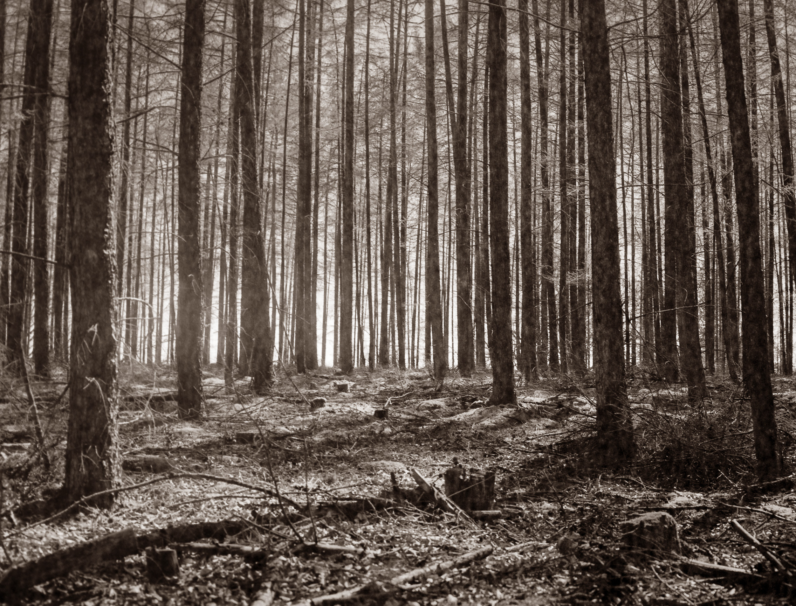
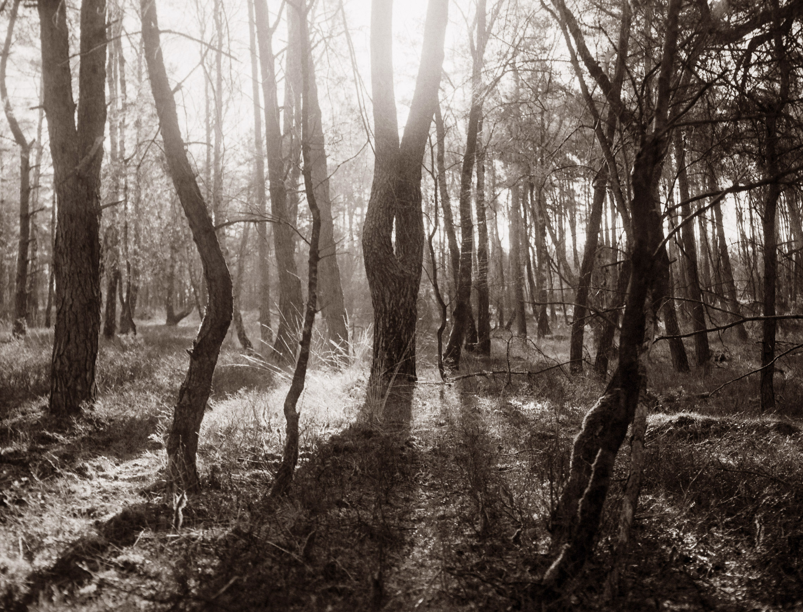

Changing Landscapes
Veluwezoom




Changing Landscapes
Hiking through some characteristic Dutch landscape of interchanging forests and grasslands.
Photos were shot using a Zenza Bronica ETRS and 75mm f2.8 lens on expired Ilford Delta 100 film.